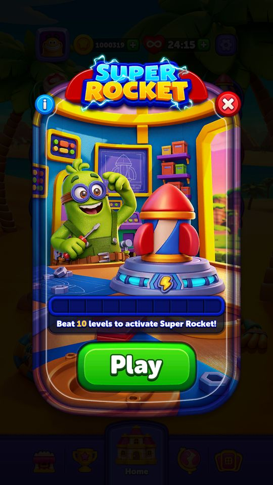
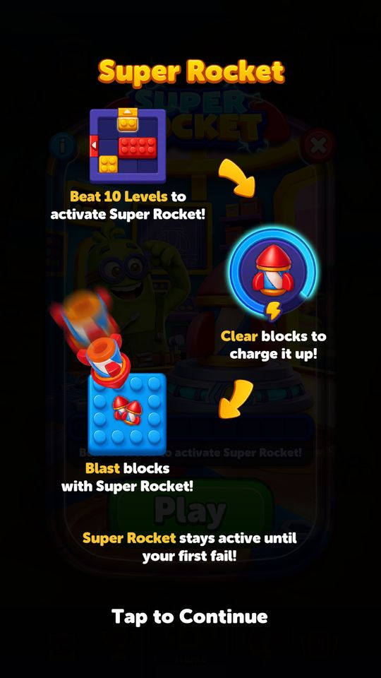
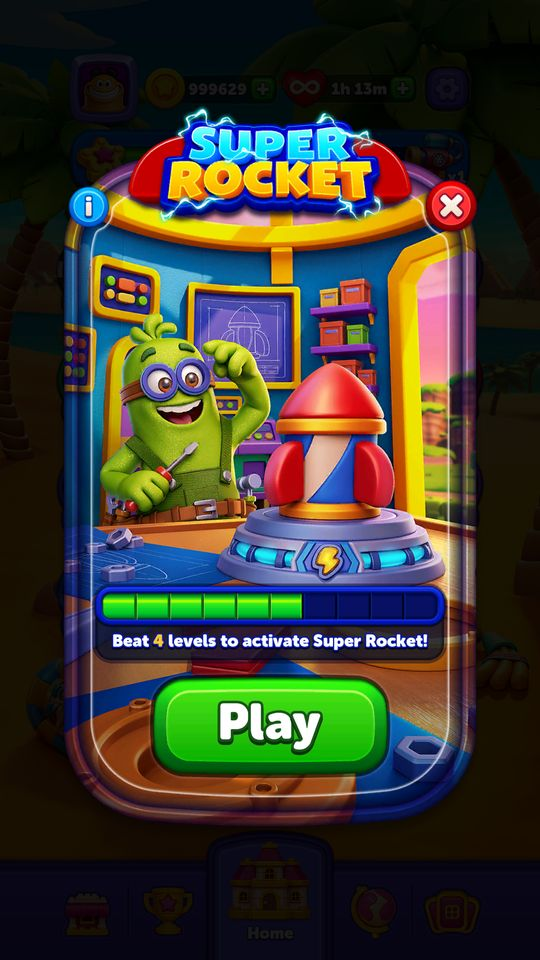
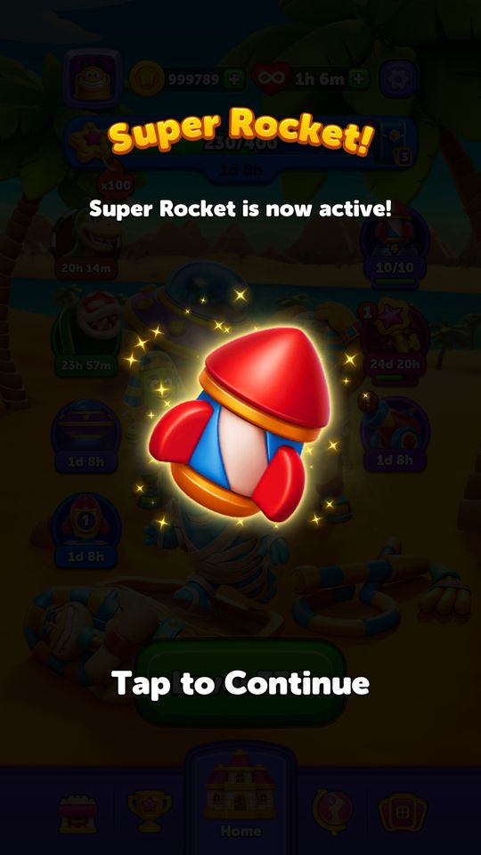
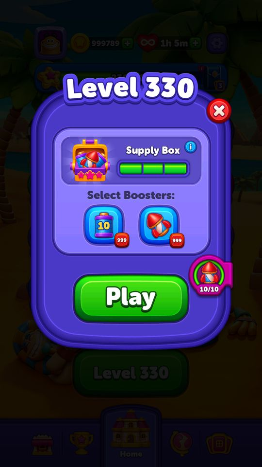
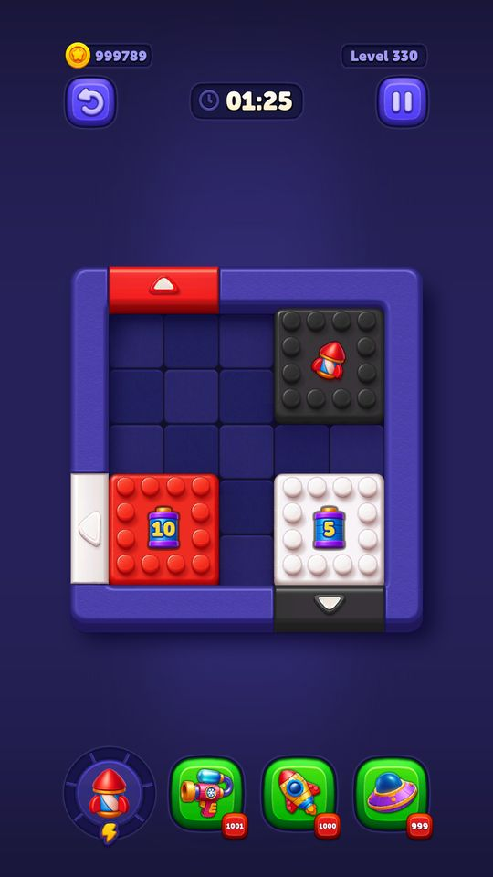
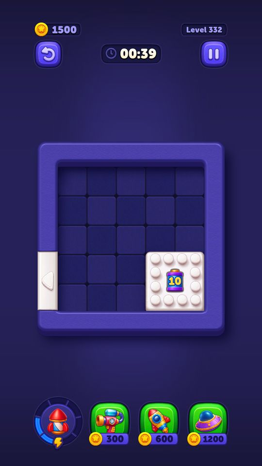

Light Ball / Super Rocket
Thanh tiến độ ở màn Home: thắng màn thì nạp, đầy thì lần vào màn sau được tặng Rocket power-up ngay trên bàn.
Mô tả
- Thanh tiến độ ở màn Home: thắng màn thì nạp, đầy thì lần vào màn sau được tặng Rocket power-up ngay trên bàn.
- Trong code gọi là SuperRocket, trong config gọi là LightBall — hai tên của cùng một thứ.
Còn thiếu / chưa xác minh
Mở khóa & điểm vào
LightBallConfigModel.LightBallUnlockLevel — client mặc định 10 nhưng server đang để 200. IsLightBallEnabled = false ở cả hai nơi, nghĩa là tính năng hiện đang tắt trên bản đang chạy.
Điểm vào:
- Nút/thanh tiến độ ở màn Home
- Animation nhận điểm khi quay về Home sau khi thắng
Cách hoạt động
- SuperRocketStateService quyết định trạng thái theo SuperRocketState (Disabled, Locked, Unlocked, Tutorial, Eligible).
- Thắng màn -> TryIncreaseProgress() cộng tiến độ, GetClampedProgress giới hạn theo GetSuperRocketNeededProgress().
- Khi về Home, ShouldShowCollectibleEarnAnimationOnLobbyReturn() và GetLobbyButtonProgressIncreaseSinceLastSeen() so tiến độ hiện tại với GetLastSeenLobbyButtonProgress() để chạy animation cộng điểm; TrySetLastSeenLobbyButtonSuperRocketProgress() ghi lại mốc đã xem.
- Đầy thanh -> lần vào màn kế PowerUpController.TrySpawnRocketPowerUp(PowerUpGrantReason.SuperRocket), rồi TryResetProgress() về 0.
- MarkActivatedPopUpAsShown / IsActivatedPopUpShown lo popup báo đã kích hoạt.
Luồng chi tiết theo code
SuperRocketStateService quyết định trạng thái theo SuperRocketState (Disabled, Locked, Unlocked, Tutorial, Eligible). Thắng màn -> TryIncreaseProgress() cộng tiến độ, GetClampedProgress giới hạn theo GetSuperRocketNeededProgress(). Khi về Home, ShouldShowCollectibleEarnAnimationOnLobbyReturn() và GetLobbyButtonProgressIncreaseSinceLastSeen() so tiến độ hiện tại với GetLastSeenLobbyButtonProgress() để chạy animation cộng điểm; TrySetLastSeenLobbyButtonSuperRocketProgress() ghi lại mốc đã xem. Đầy thanh -> lần vào màn kế PowerUpController.TrySpawnRocketPowerUp(PowerUpGrantReason.SuperRocket), rồi TryResetProgress() về 0. MarkActivatedPopUpAsShown / IsActivatedPopUpShown lo popup báo đã kích hoạt.
Ảnh chụp màn hình (7)
7 ảnh chụp trong game (LDPlayer, bản 1006, tài khoản thử level 320 → 350 (07/10/2026)). Bấm ảnh để phóng to; nhãn UC dẫn tới use case tương ứng.














Phần thưởng
Phần thưởng theo code
| Ngữ cảnh | Phần thưởng | Evidence |
|---|---|---|
| Thanh đầy |  1 Rocket power-up trên bàn ở màn kế 1 Rocket power-up trên bàn ở màn kế | PowerUpGrantReason.SuperRocket |
Số liệu chính
| Chỉ số | Giá trị | Nguồn |
|---|---|---|
| LightBallConfigModel.LightBallNeededProgress | 10 | LightBallConfigModel.LightBallNeededProgress — Assets/Resources/defaultconfigs/LightBallConfigModel.json |
| LightBallConfigModel.MinRocketCount | 1 | LightBallConfigModel.MinRocketCount — Assets/Resources/defaultconfigs/LightBallConfigModel.json |
| LightBallConfigModel.MaxRocketCount | 2 | LightBallConfigModel.MaxRocketCount — Assets/Resources/defaultconfigs/LightBallConfigModel.json |
Use case (4)
Bấm vào từng use case để mở. Mở/đóng tất cả
UC-01 Nạp tiến độ sau khi thắng màn
Các bước- SuperRocketService.TryIncreaseProgress()
- SuperRocketDataService lưu tiến độ mới, đánh dấu đồng bộ
- GetClampedProgress() chặn trần ở GetSuperRocketNeededProgress()
| Actor | System |
|---|---|
| Trigger | Thắng một màn |
| Điều kiện | Đã mở khoá và tính năng đang bật |
| Kết quả | Thanh tiến độ tăng |
| Quy tắc / số liệu | LightBallNeededProgress = 10 (client và server giống nhau) |
| Evidence | SuperRocketService.TryIncreaseProgress; GetClampedProgress; GetSuperRocketNeededProgress |
UC-02 Animation cộng điểm khi về Home
Các bước- ShouldShowCollectibleEarnAnimationOnLobbyReturn() trả true
- GetLobbyButtonProgressIncreaseSinceLastSeen() cho biết tăng bao nhiêu
- Chạy animation bay điểm vào nút
- TrySetLastSeenLobbyButtonSuperRocketProgress() cập nhật mốc
| Actor | System |
|---|---|
| Trigger | Quay về màn Home sau khi thắng |
| Điều kiện | Tiến độ đã tăng từ lần xem trước |
| Kết quả | Người chơi thấy rõ tiến độ vừa tăng |
| Quy tắc / số liệu | - |
| Evidence | SuperRocketService.ShouldShowCollectibleEarnAnimationOnLobbyReturn; GetLobbyButtonProgressIncreaseSinceLastSeen; TrySetLastSeenLobbyButtonSuperRocketProgress |
UC-03 Đầy thanh — tặng Rocket ở màn kế
Các bước- SuperRocketState = Eligible
- PowerUpController.TrySpawnRocketPowerUp(PowerUpGrantReason.SuperRocket)
- Số rocket theo MinRocketCount/MaxRocketCount của LightBallConfigModel
- TryResetProgress() đưa tiến độ về 0
| Actor | System |
|---|---|
| Trigger | Vào màn khi tiến độ đầy |
| Điều kiện | - |
| Kết quả | Bàn chơi có sẵn rocket |
| Quy tắc / số liệu | Server để MaxRocketCount = 1 (client mặc định 2) |
| Evidence | SuperRocketService.TryResetProgress; PowerUpController.TrySpawnRocketPowerUp; enum SuperRocketState |
UC-04 Hướng dẫn lần đầu
Các bước- SuperRocketState = Tutorial
- Hiện popup giới thiệu
- MarkActivatedPopUpAsShown()
- IsActivatedPopUpShown() trả true các lần sau
| Actor | System |
|---|---|
| Trigger | Vừa mở khoá tính năng |
| Điều kiện | Chưa từng xem |
| Kết quả | Chỉ dạy một lần |
| Quy tắc / số liệu | - |
| Evidence | SuperRocketService.MarkActivatedPopUpAsShown; IsActivatedPopUpShown; enum SuperRocketState |
Cấu hình (10)
Gộp mọi nguồn: const trong code, JSON mặc định trong Resources, bảng static, storage key, AB test, cờ server.
| Nguồn | Key | Kiểu | Giá trị | Ý nghĩa | Nơi định nghĩa |
|---|---|---|---|---|---|
| json default | LightBallConfigModel.IsLightBallEnabled | bool | false | Assets/Resources/defaultconfigs/LightBallConfigModel.json | |
| json default | LightBallConfigModel.LightBallUnlockLevel | int | 200 — server đang chạy; mặc định client: 10 | Assets/Resources/defaultconfigs/LightBallConfigModel.json | |
| json default | LightBallConfigModel.LightBallNeededProgress | int | 10 | Assets/Resources/defaultconfigs/LightBallConfigModel.json | |
| json default | LightBallConfigModel.RequiredChargeCount | int | 7 — server đang chạy; mặc định client: 5 | Assets/Resources/defaultconfigs/LightBallConfigModel.json | |
| json default | LightBallConfigModel.MinRocketCount | int | 1 | Assets/Resources/defaultconfigs/LightBallConfigModel.json | |
| json default | LightBallConfigModel.MaxRocketCount | int | 2 | Assets/Resources/defaultconfigs/LightBallConfigModel.json | |
| json default | LightBallConfigModel.RegularBlockTargetWeight | int | 1.0 — server đang chạy; mặc định client: 10 | Assets/Resources/defaultconfigs/LightBallConfigModel.json | |
| json default | LightBallConfigModel.RocketLightBallTargetWeight | int | 2.0 — server đang chạy; mặc định client: 80 | Assets/Resources/defaultconfigs/LightBallConfigModel.json | |
| json default | LightBallConfigModel.DurationLightBallTargetWeight | int | 1.0 — server đang chạy; mặc định client: 10 | Assets/Resources/defaultconfigs/LightBallConfigModel.json | |
| json default | LightBallConfigModel.DoubleRocketSpawnProbability | float | 0.35 — server đang chạy; mặc định client: 0.5 | Assets/Resources/defaultconfigs/LightBallConfigModel.json |
Giao diện (UI)
| Element | Class | Mục đích |
|---|---|---|
| Nút Light Ball ở Home | Modules.Contexts.Home.LightBall.Scripts | hiện thanh tiến độ |
Storage keys
SuperRocket progress lastSeenLobbyButtonProgress activatedPopUpShown
Chưa đọc được / ghi chú
- Tính năng đang tắt trên server (IsLightBallEnabled = false) nên không quan sát được hành vi thật khi chạy.
Tính năng liên quan
Power-up sinh trong bàn (Rocket / Duration) Pre-Booster (mua power-up trước khi vào màn) Butler / Supply Box (thưởng chuỗi thắng)
Nguồn đã đọc
- PseudoC/.../Home/LightBall/Scripts/SuperRocketService.c
- Assets/Resources/defaultconfigs/LightBallConfigModel.json